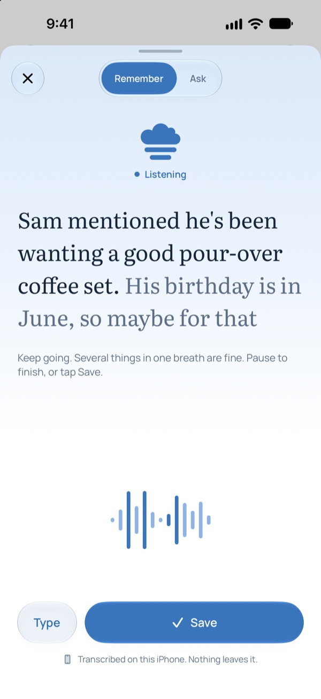

A private memory for your iPhone
Say it once. Ask for it later.
Tell Stratus the things you would otherwise forget: what a friend said they wanted, where you left the spare key, the wine you loved at dinner. Later, just ask. It all stays on your phone.
Free. For iPhone with Apple Intelligence.
Transcribed on this iPhone. Nothing leaves it.
